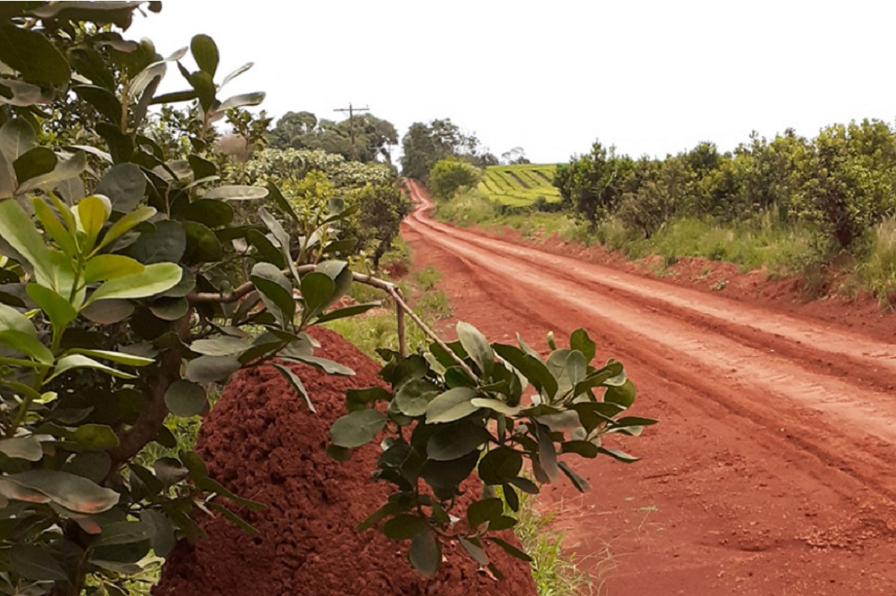
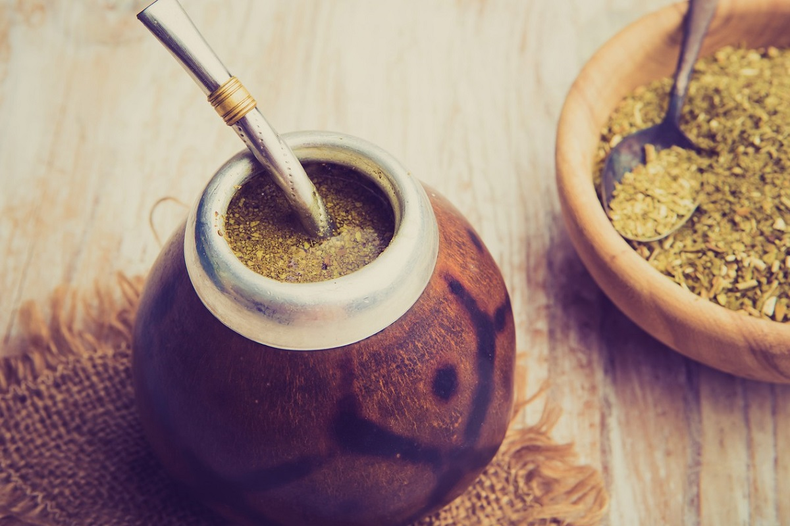
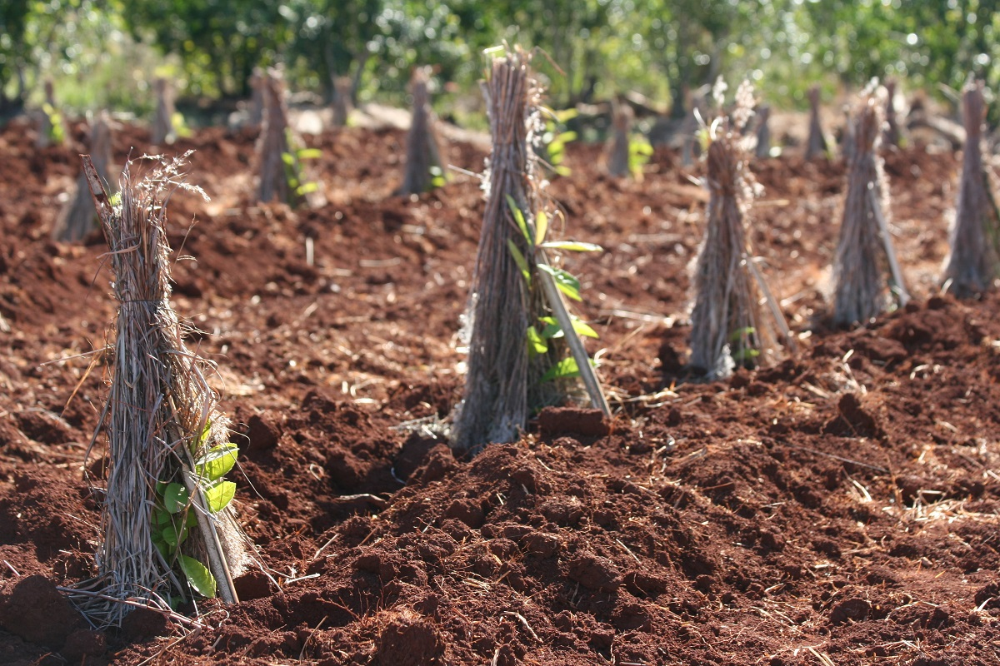

¿LO SABÍAS?
ARGENTINA: Principal productor de Yerba Mate del Mundo
Aquí, el cultivo abarca una superficie de 165.200 hectáreas, y 809 millones de kilos de hoja verde fueron cosechados durante el 2021.

MISIONES Y CORRIENTES únicas tierras productoras
La Yerba Mate es un árbol originario de la Selva Paranaense, en la Argentina crece únicamente en Misiones y nordeste de Corrientes, en suelos altamente ferrosos.

El mate contiene 90% más ANTIOXIDANTES que el té
Al contener gran cantidad de polifenoles, contribuye a mejorar las defensas naturales del organismo, protegiendo contra los radicales libres y el daño celular.

5 años para llegar a tu mesa
El proceso de elaboración requiere que la planta necesite 4 años para crecer, ser cosechada y permanecer al menos 1 año en depósitos acondicionados.